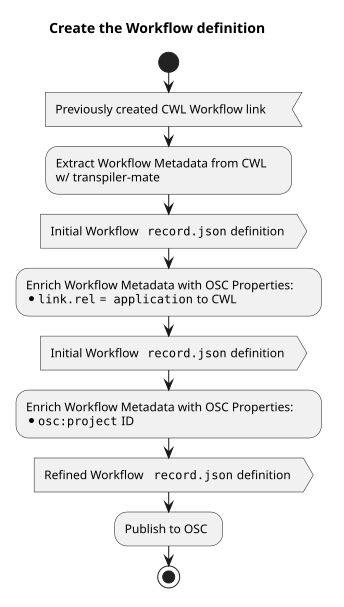
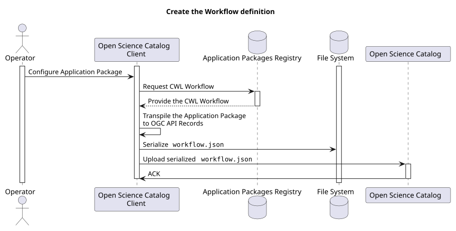
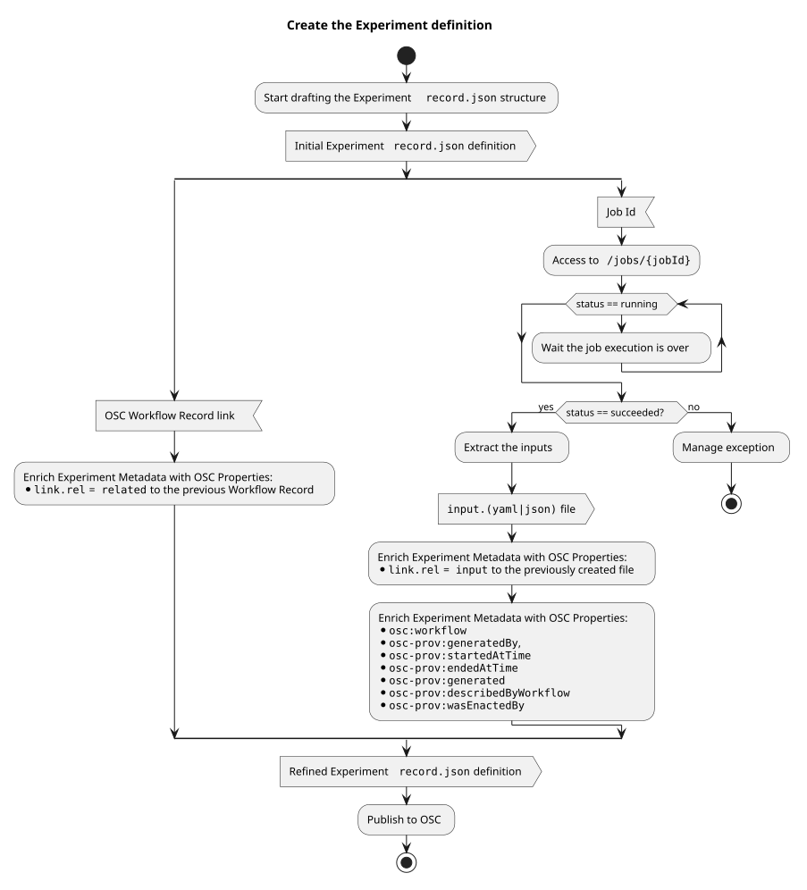
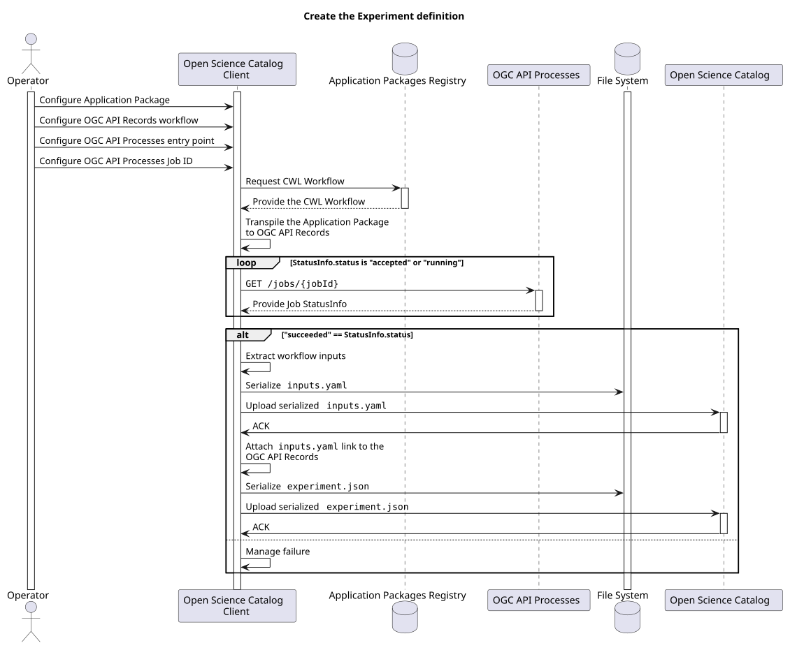
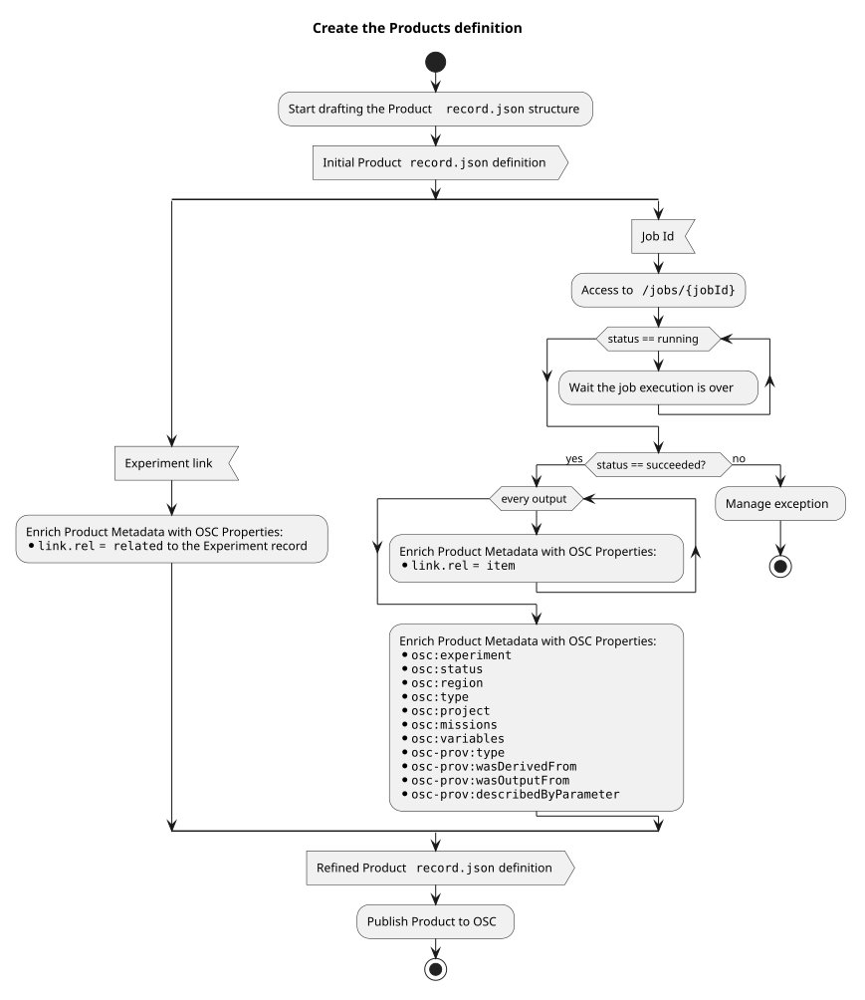
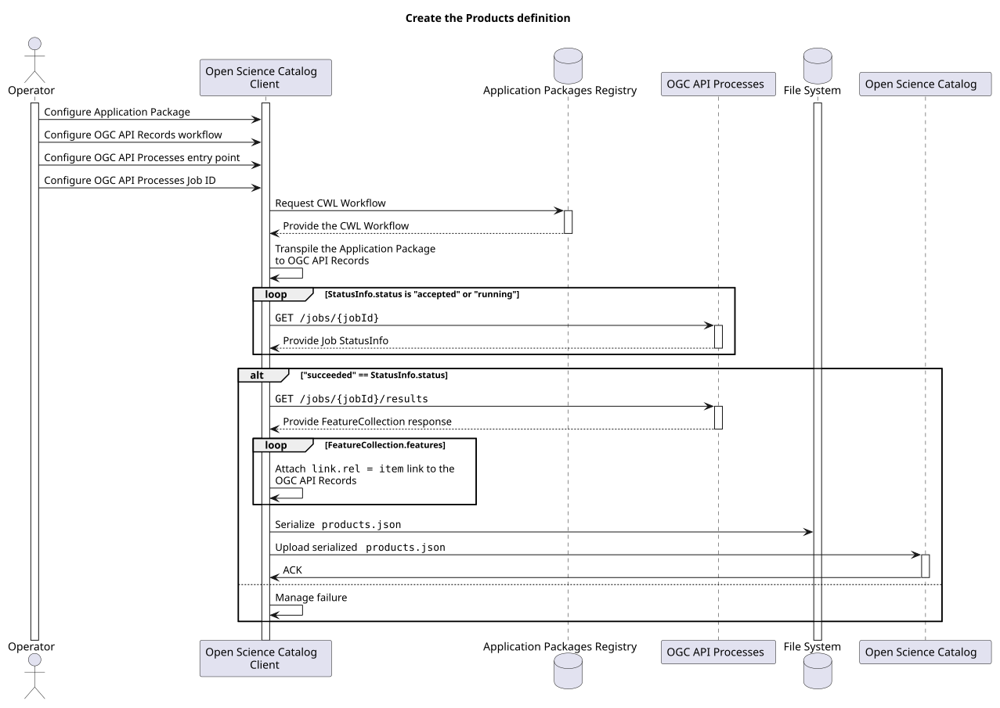

CLI Reference
osc-client is a command-line interface for generating Open Science Catalog
metadata from CWL workflows and their executions on
OGC API - Processes services.
The CLI is organized around a shared command entry point and three subcommands:
workflowexperimentproducts
Base Command
All commands are invoked through the main CLI entry point:
osc-client [OPTIONS] SOURCE COMMAND [ARGS]...
SOURCE is the input CWL workflow description that is used to bootstrap the
metadata generation flow.
Shared Options
The following options are required for all commands:
--idThe OGC API Processes job identifier to assign to the generated metadata record.--project-idThe identifier of the referencing Open Science Catalog project.--project-nameThe human-readable name of the referencing Open Science Catalog project.--outputThe output directory where generated metadata files are written.
Example
osc-client \
--id job-001 \
--project-id my-project \
--project-name "My Project" \
--output ./build/catalog \
https://example.org/workflows/process.cwl \
workflow
workflow
The workflow command creates metadata for a workflow resource starting from the
provided CWL document.
It enriches the workflow metadata and writes the generated record under the workflow output structure.
Syntax
osc-client [SHARED OPTIONS] SOURCE workflow
Behavior
- loads and transpiles metadata from the CWL source
- assigns the provided
--idto the generated record - enriches the record as an Open Science Catalog workflow
- writes the resulting metadata under the selected output directory
Diagrams


experiment
The experiment command creates metadata for an experiment derived from a workflow
execution on an OGC API - Processes instance.
In addition to the shared options, it requires workflow and process service references so the execution metadata can be collected and serialized.
Syntax
osc-client [SHARED OPTIONS] SOURCE experiment \
--workflow-id WORKFLOW_ID \
--ogc-api-processes-endpoint URL \
[--authorization-token TOKEN]
Command Options
--workflow-idThe referencing OGC API Records workflow URL.--ogc-api-processes-endpointThe OGC API - Processes service URL used to retrieve execution status and inputs.--authorization-tokenOptional bearer token used to authenticate against the OGC API - Processes service.
Behavior
- retrieves execution details for the provided job identifier
- serializes experiment input parameters
- links the experiment back to the originating workflow
- enriches the record with experiment and provenance metadata
- writes the resulting record under the experiment output structure
Diagrams


products
The products command creates product metadata from the outputs of an executed
workflow.
It generates a STAC collection representing the produced data and enriches it with Open Science Catalog and themes extension metadata.
Syntax
osc-client [SHARED OPTIONS] SOURCE products \
--experiment-id EXPERIMENT_ID \
--ogc-api-processes-endpoint URL \
[--authorization-token TOKEN]
Command Options
--experiment-idThe referencing OGC API Records workflow ID.--ogc-api-processes-endpointThe OGC API - Processes service URL used to access execution outputs.--authorization-tokenOptional bearer token used to authenticate against the OGC API - Processes service.
Behavior
- retrieves execution output metadata from the OGC API - Processes service
- serializes the raw output payload
- generates a STAC collection for the produced resource
- enriches the collection with OSC and themes extensions
- writes the resulting collection under the product output structure
Diagrams

